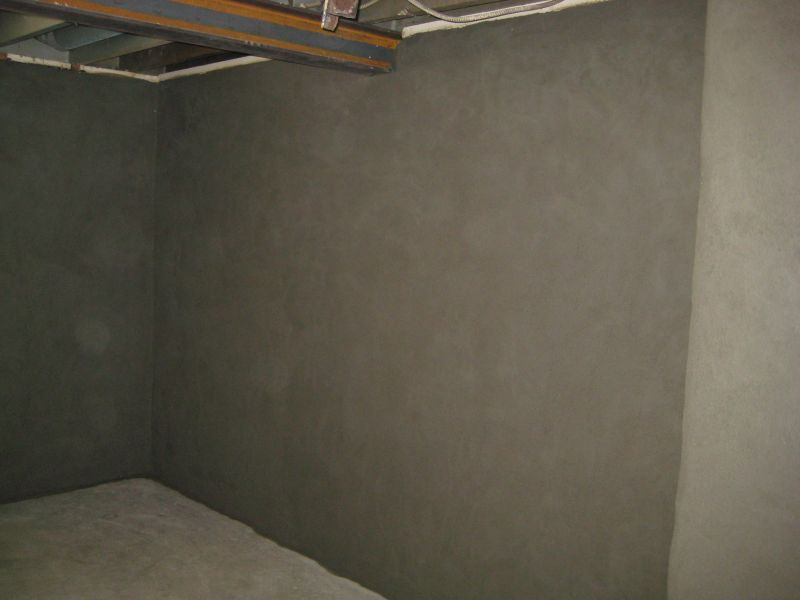
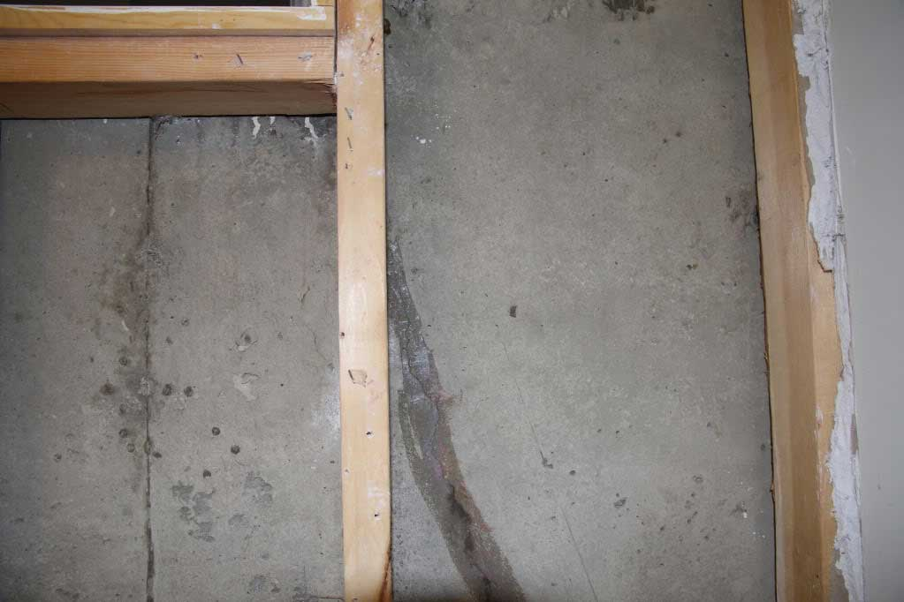
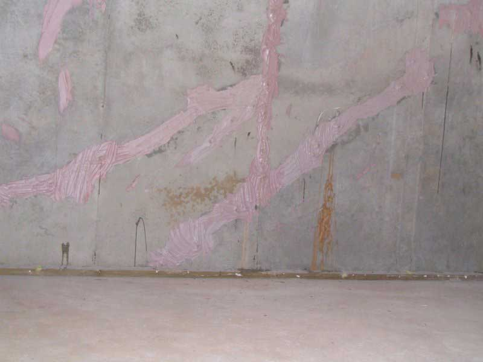

Roughcasting
Sometimes walls (specifically older stone foundations) deteriorate quite heavily. Doing patch work and painting and whatnot is sure-fire recipe to make redoing your basement walls a family tradition. However, if you want to fix these degrading walls on a more permanent basis, this is where roughcasting comes in. Firstly, the walls are scraped and sanded down to being as flat and level as possible. Then vapor barrier is applied to the surface of the wall, to contain the moisture from the outside. On top of the vapor barrier, we apply a wire mesh that we attach to the wall with Ramset nails, assuring it will not come off. Then a skim coat of CFP Fiber cement is applied to the wall as the first and second coat, make sure to dry thoroughly, and any settlement cracks touched up, and then finally, a finish coat is applied to the wall, and if we didn't know any better, we would think that you just had a brand new foundation poured!
V-Grooving
V-grooving cracks is a method utilized for small to moderate interior wall cracks. It's pretty straightforward: First, we will expertly chisel out the crack to make it a little wider than it is. Why would we make the crack larger, you may be asking? Well, if we break down the area around the crack, we will be one step ahead of the game as far as knowing if there were to be some unsound and loose pieces of foundation which may (and most likely will) end up cracking even more, causing that same crack to reopen, possibly even worse than before, regardless of what was used to patch it. But with v-grooving, we chisel out the area, making sure there are no loose pieces in the foundation, and then cement (2 coats if necessary) the crack back up, level with the rest of the wall.
Epoxy Injection
Epoxy is a VERY strong adhesive that is used in many cement based projects. 2 different adhesive chemicals are pushed out through a specialty epoxy gun into a crack, and when the 2 chemicals bind with each other, it forms an impenetrable and unbreakable adhesive, which is used to hold the crack together. Generally, epoxy injections are very effective at cracks that are fairly narrow, and do not allow moisture in through them. Epoxy is not thoroughly moisture resistant, and over time, tha epoxy will start to come out of the crack, and more injections will need to be done. Epoxy injections are not considered a permanent fix for foundation cracks, but when done properly, with the proper planning and know-how, can be an effective method for keeping foundations crack-free.